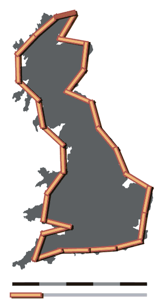
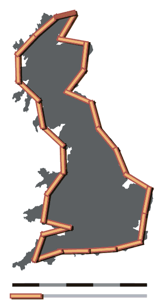
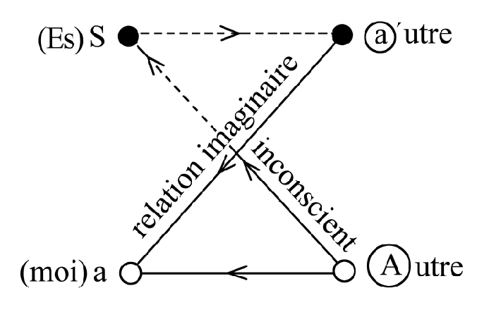

Reading Group
"Smaldino "Modeling Social Behavior" - Chapter 11: Maps And TerritoriesPeter Romero, 29.02.2024
Topics
- Wrap-up on modelling
- Review-discussion on chapters
The Map is Not The Territory
The Map is Not The Territory
- Making a map is an act of data compression (e.g., Mercator Projection)....
- ...hence, map-territory relations appear distorted
- Models partition the world in systems of interest based on assumptions
- Analysis of a model reveals only the consequences of those assumptions
- What we learn about reality depends on quality of mapping between model and reality
Problems of Mapping
- Inclusion: elements from reality included or not
- Representation: assumptions may not represent key aspects of reality
- Hence, continual scrutiny is necessary
Problems of Mapping
 

The Coastline Paradox
Problems of Mapping Human Relationships
Problems of Mapping Human Relationships
- Human relationships inherently relational; the closer the more conflict-prone...
- ... hence, it's important ot keep the mental models updated
- Krishnamurti: two images have relationship; not two people
- Often: expectation on behaviour based on mental representation of person
- Lancan: Anxiety: Praying Mantis Scheme
Problems of Mapping Human Relationships
Problems of Mapping Human Relationships
- Problems arise if we do not allow our models to evolve...
- ...or if we apply them in the wrong context
- Hence, healthy relationships are built on communication.
Problems of Mapping Human Relationships
Flawed Model and Financial Crisis
- 2008 Financial Crisis: flawed model of risk distribution
- Wrong mapping between assumptions
- Expert neglect (e.g., causal link of risks)
- Neglect of rare but significant events
Flawed Model and Financial Crisis

Flawed Model and Architecture
- High Modernism (Charles-Édouard Jeanneret aka Le Corbusier)
- "Stipulating an abstract, simplified human subject with certain material and physical requirements" (Scott, 1998, p.115)
- Urban "renewal" projects...
- ...but "Real humans need more than an apartment and a job" (Smaldino book, p. 318)
Flawed Model and Architecture ?

Flawed Model and Architecture
Conclusions
- All models omit; no problem if we understand their nature
- All decisions are made on the basis of some model
- We all use models; yet only a few write them down.
- Trouble comes when we're uncritical or unattentive
- Constant feedback and evaluation against the real world are necessary
- We need many models to navigate the world successfully
The Journey Continues
- Modeler as storyteller, animator, tinkerer, and magician
- Models create common frameworks and vocabulary on otherwise intractable problems
- All mature sciences have modeling integrated as key component of the scientists' toolkit
(all sensu Smaldino, p. 320)
Let's Discuss
- Doing Violence To Reality
- Particles
- Schelling Chapter
- Contagion
- Opinion Dynamics
- Cooperation
- Coordination
- The Scientific Process
- Networks
- Models and Reality
- Maps and Territories